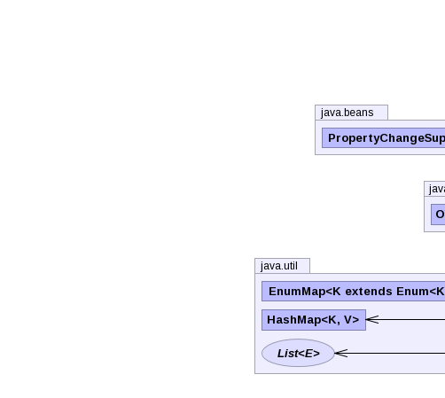
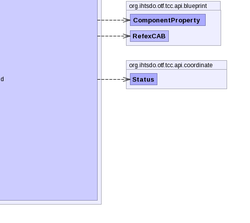

- java.lang.Object
-
- org.ihtsdo.otf.tcc.api.blueprint.CreateOrAmendBlueprint
-
- All Implemented Interfaces:
- PropertyChangeListener, EventListener
- Direct Known Subclasses:
- ConceptAttributeAB, ConceptCB, DescriptionCAB, MediaCAB, RefexCAB, RelationshipCAB
public abstract class CreateOrAmendBlueprint extends Object implements PropertyChangeListener
The Class CreateOrAmendBlueprint contains methods for creating a terminology generic blueprint. This blueprint can be constructed into a type ofComonentChronicleBI. This is the preferred method for updating or creating new components or concepts.- See Also:
TerminologyBuilderBI,ComponentChronicleBI-
 



-
-
Field Summary
Fields Modifier and Type Field and Description protected IdDirectiveidDirectiveField descriptionprotected PropertyChangeSupportpcsField descriptionprotected EnumMap<ComponentProperty,Object>propertiesprotected ComponentChronicleBI<?>referencedComponentprotected RefexDirectiverefexDirectiveField description
-
Constructor Summary
Constructors Constructor and Description CreateOrAmendBlueprint(UUID componentUuid, ComponentVersionBI componentVersion, ViewCoordinate viewCoordinate, IdDirective idDirective, RefexDirective refexDirective)Instantiates a new create or amend blueprint.
-
Method Summary
Methods Modifier and Type Method and Description voidaddAnnotationBlueprint(RefexCAB annotationBlueprint)Adds an annotation blueprint to be associated with this component blueprint.voidaddExtraUuid(UUID extraUuid, int authorityNid)Adds an additionalUUIDID to the component specified by this component blueprint.voidaddLongId(Long longId, int authorityNid)Adds an additionallongID to the component specified by this component blueprint.voidaddPropertyChangeListener(PropertyChangeListener propertyChangeListener)Adds the specified property change listener.voidaddPropertyChangeListener(String string, PropertyChangeListener propertyChangeListener)Adds the specified property change listener.voidaddStringId(String stringId, int authorityNid)Adds an additionalStringID to the component specified by this component blueprint.List<RefexCAB>getAnnotationBlueprints()Returns list of annotation blueprints associated with this component blueprint.intgetComponentNid()Gets the nid of the component specified by this blueprint.UUIDgetComponentUuid()Gets the uuid of the component specified by this blueprint.protected static UUIDgetComponentUUID(UUID componentUuid, ComponentVersionBI cv, IdDirective idDirective)Method descriptionHashMap<Object,Integer>getIdMap()Returns a map of IDs asObjectsand their associated authority nids.intgetInt(ComponentProperty key)Gets an integer representation of the value associated with the given refex propertykey.protected StringgetPrimoridalUuidString(int componentNid)Gets a string representing the primordial uuid for the component specified by thecomponentNid.protected StringgetPrimoridalUuidString(UUID uuid)Gets a string representing the primordial uuid for the component specified by theuuid/code>.EnumMap<ComponentProperty,Object>getProperties()ComponentChronicleBI<?>getReferencedComponent()StatusgetStatus()Gets the Enumerated status type associated with this component blueprint.UUIDgetUuid(ComponentProperty key)Gets an UUID representation of the value associated with the given refex propertykey.voidpropertyChange(PropertyChangeEvent propertyChangeEvent)Listens for a property change event in any of the component blueprint classes and recomputes the blueprints' computed uuid if a dependent component has changed.abstract voidrecomputeUuid()This method is implemented by the other component blueprint classes.voidremovePropertyChangeListener(PropertyChangeListener propertyChangeListener)Removes the specified property change listener.voidremovePropertyChangeListener(String string, PropertyChangeListener propertyChangeListener)Removes the specified property change listener.voidreplaceAnnotationBlueprints(List<RefexCAB> annotationBlueprints)Replace the annotation blueprints associated with this blueprint with the given list ofannoationBlueprints.voidsetComponentUuid(UUID componentUuid)Sets the uuid of the component specified by this blueprint.voidsetComponentUuidNoRecompute(UUID componentUuid)Sets the component uuid.voidsetCurrent()Sets this component blueprint's status to active.voidsetReferencedComponent(ComponentChronicleBI<?> referencedComponent)voidsetRetired()Sets this component blueprint's status to retired.voidsetStatus(Status status)Sets the uuid of the status associated with this component blueprint.
-
-
-
Field Detail
-
properties
protected EnumMap<ComponentProperty,Object> properties
-
pcs
protected PropertyChangeSupport pcs
Field description
-
idDirective
protected IdDirective idDirective
Field description
-
refexDirective
protected RefexDirective refexDirective
Field description
-
referencedComponent
protected ComponentChronicleBI<?> referencedComponent
-
-
Constructor Detail
-
CreateOrAmendBlueprint
public CreateOrAmendBlueprint(UUID componentUuid, ComponentVersionBI componentVersion, ViewCoordinate viewCoordinate, IdDirective idDirective, RefexDirective refexDirective) throws IOException, InvalidCAB, ContradictionException
Instantiates a new create or amend blueprint.- Parameters:
componentUuid- the uuid of the component specified by this blueprintcomponentVersion- the component version to create this blueprint fromviewCoordinate- the view coordinate specifying which versions are active and inactiveidDirective-refexDirective-- Throws:
IOException- signals that an I/O exception has occurredInvalidCAB- if the any of the values in blueprint to make are invalidContradictionException- if more than one version is returned for the view coordinate
-
-
Method Detail
-
getReferencedComponent
public ComponentChronicleBI<?> getReferencedComponent()
-
setReferencedComponent
public void setReferencedComponent(ComponentChronicleBI<?> referencedComponent)
-
addAnnotationBlueprint
public void addAnnotationBlueprint(RefexCAB annotationBlueprint)
Adds an annotation blueprint to be associated with this component blueprint.- Parameters:
annotationBlueprint- the annotation blueprint to associate with this component blueprint
-
addExtraUuid
public void addExtraUuid(UUID extraUuid, int authorityNid)
Adds an additionalUUIDID to the component specified by this component blueprint. This is a UUID in addition to the primordial uuid associated with this concept. Use setComponentUuid to set the primordial uuid.- Parameters:
extraUuid- the uuid identifier to addauthorityNid- the authority associated with the identifier- See Also:
setComponentUuid(java.util.UUID)
-
addLongId
public void addLongId(Long longId, int authorityNid)
Adds an additionallongID to the component specified by this component blueprint. Any SCT IDs to add to this concept should be added using this method.- Parameters:
longId- the long identifier to addauthorityNid- the authority associated with the identifier
-
addPropertyChangeListener
public void addPropertyChangeListener(PropertyChangeListener propertyChangeListener)
Adds the specified property change listener.- Parameters:
propertyChangeListener- the property change listener
-
addPropertyChangeListener
public void addPropertyChangeListener(String string, PropertyChangeListener propertyChangeListener)
Adds the specified property change listener.- Parameters:
string- the string describing the property namepropertyChangeListener- the property change listener
-
addStringId
public void addStringId(String stringId, int authorityNid)
Adds an additionalStringID to the component specified by this component blueprint.- Parameters:
stringId- the string identifier to addauthorityNid- the authority associated with the identifier
-
propertyChange
public void propertyChange(PropertyChangeEvent propertyChangeEvent)
Listens for a property change event in any of the component blueprint classes and recomputes the blueprints' computed uuid if a dependent component has changed.- Specified by:
propertyChangein interfacePropertyChangeListener- Parameters:
propertyChangeEvent- the property change event
-
recomputeUuid
public abstract void recomputeUuid() throws NoSuchAlgorithmException, UnsupportedEncodingException, IOException, InvalidCAB, ContradictionExceptionThis method is implemented by the other component blueprint classes. This allows the components to recompute their uuids if a dependent component changes.- Throws:
NoSuchAlgorithmException- indicates a no such algorithm exception has occurredUnsupportedEncodingException- indicates an unsupported encoding exception has occurredIOException- signals that an I/O exception has occurredInvalidCAB- if the any of the values in blueprint to make are invalidContradictionException- if more than one version is found for a give position or view coordinate
-
removePropertyChangeListener
public void removePropertyChangeListener(PropertyChangeListener propertyChangeListener)
Removes the specified property change listener.- Parameters:
propertyChangeListener- the property change listener
-
removePropertyChangeListener
public void removePropertyChangeListener(String string, PropertyChangeListener propertyChangeListener)
Removes the specified property change listener.- Parameters:
string- the string describing the property namepropertyChangeListener- the property change listener
-
replaceAnnotationBlueprints
public void replaceAnnotationBlueprints(List<RefexCAB> annotationBlueprints)
Replace the annotation blueprints associated with this blueprint with the given list ofannoationBlueprints.- Parameters:
annotationBlueprints- the annotation blueprints to associate with this component blueprint
-
getAnnotationBlueprints
public List<RefexCAB> getAnnotationBlueprints() throws IOException, InvalidCAB, ContradictionException
Returns list of annotation blueprints associated with this component blueprint.- Returns:
- a list of annotation blueprints associated with this component
- Throws:
IOException- signals that an I/O exception has occurredInvalidCAB- if the any of the values in blueprint to make are invalidContradictionException- if more then one version is found for a particular view coordinate
-
getComponentNid
public int getComponentNid() throws IOExceptionGets the nid of the component specified by this blueprint.- Returns:
- the nid of the component specified by this blueprint.
- Throws:
IOException- signals that an I/O exception has occurred
-
getComponentUUID
protected static UUID getComponentUUID(UUID componentUuid, ComponentVersionBI cv, IdDirective idDirective)
Method description- Parameters:
componentUuid-cv-idDirective-- Returns:
-
getComponentUuid
public UUID getComponentUuid()
Gets the uuid of the component specified by this blueprint.- Returns:
- the uuid of the component specified by this blueprint
-
getIdMap
public HashMap<Object,Integer> getIdMap()
Returns a map of IDs asObjectsand their associated authority nids. The supported IDs are currently: long, string, and uuid.- Returns:
- a map of IDs as
Objectsand their associated authority nids
-
getPrimoridalUuidString
protected String getPrimoridalUuidString(int componentNid) throws IOException, InvalidCAB
Gets a string representing the primordial uuid for the component specified by thecomponentNid. This is uuid associated with the first version of the component.- Parameters:
componentNid- the nid associated with the component in question- Returns:
- a string representing the primordial uuid of the component in question
- Throws:
IOException- signals that an I/O exception has occurredInvalidCAB- if the any of the values in blueprint to make are invalid
-
getPrimoridalUuidString
protected String getPrimoridalUuidString(UUID uuid) throws IOException, InvalidCAB
Gets a string representing the primordial uuid for the component specified by theuuid/code>. This is uuid associated with the first version of the component.- Parameters:
uuid- the uuid of the component in question- Returns:
- a string representing the primordial uuid of the component in question
- Throws:
IOException- signals that an I/O exception has occurredInvalidCAB- if the any of the values in blueprint to make are invalid
-
getStatus
public Status getStatus()
Gets the Enumerated status type associated with this component blueprint.- Returns:
- the Status associated with this component blueprint
-
setComponentUuid
public void setComponentUuid(UUID componentUuid)
Sets the uuid of the component specified by this blueprint.- Parameters:
componentUuid- the uuid of the component specified by this blueprint
-
getProperties
public EnumMap<ComponentProperty,Object> getProperties()
-
setComponentUuidNoRecompute
public final void setComponentUuidNoRecompute(UUID componentUuid)
Sets the component uuid. Does not fire a property change event for the changed uuid. No dependent component uuids will be recomputed. This is useful when setting the component uuid to a pre-determined uuid, and purposefully not use a re-computable uuid.- Parameters:
componentUuid- the new component uuid no recompute
-
setCurrent
public void setCurrent()
Sets this component blueprint's status to active.
-
setRetired
public void setRetired()
Sets this component blueprint's status to retired.
-
setStatus
public final void setStatus(Status status)
Sets the uuid of the status associated with this component blueprint.- Parameters:
statusUuid- the uuid of the status associated with this component blueprint
-
getInt
public int getInt(ComponentProperty key)
Gets an integer representation of the value associated with the given refex propertykey.- Parameters:
key- the refex property key- Returns:
- an integer representation of the value associated with the specified refex property
-
getUuid
public UUID getUuid(ComponentProperty key)
Gets an UUID representation of the value associated with the given refex propertykey.- Parameters:
key- the refex property key- Returns:
- an integer representation of the value associated with the specified refex property
-
-